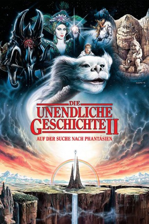

#3853 Die Unendliche Geschichte 2: Auf der Suche nach Phantásien
Alternativ: The Neverending Story II: The Next Chapter
 
 IMDB-Wertung: 5.0 / 10
IMDB-Wertung: 5.0 / 10  Metascore: 0
Metascore: 0 
Kein Buch bleibt sich gleich, wenn man es zum zweiten Mal liest. Bastian, ein Junge mit zuwenig Selbstvertrauen, muss das selbst erfahren, als er sich wieder auf das Leseabenteuer mit "Die unendliche Geschichte" einlässt. Bastian taucht ein in das Buch und wird diesmal selbst von ihm nach Phantàsien getragen, dem Ort aller Geschichten und Träume, die die Menschen zum Leben so nötig haben. Doch das Reich der Phantasie, in dem die kindliche Kaiserin herrscht, wird von der Herren über die große Leere, der verführerischen Xayide, tödlich bedroht. Bastian das Menschenkind, und sein treuer Freund Atreju aus Phantàsien müssen viele gefährliche Abenteuer durchleben, bevor sie in letzter Sekunde Phantasien, und damit auch den Weitergang der "unendlichen Geschichte", retten können.
Jahr: 1990
Dauer: 86 Minuten
FSK: 6
Land: USA Studio: Warner Bros Pictures A Time Warner CompanyTonspuren:
Untertitel:
Auflösung: 1080p (1920x800) Größe: 6799 MB
Genre: Drama, Abenteuer, Fantasy, Familie
Regisseur: George Miller
Drehbuch: Ryû Murakami
Soundtrack:
Darsteller:
 Jonathan Brandis als Bastian
Jonathan Brandis als Bastian- John Wesley Shipp als Barney
 Martin Umbach als Nimbly
Martin Umbach als Nimbly- Alexandra Johnes als Childlike Empress
- Frank Lenart als Trainer
- Markus Rupprecht als Giant
- Heinz Siegel als Giant
 Andreas Beckett als City Dweller , uncredited
Andreas Beckett als City Dweller , uncredited- Kenny Morrison als Atreyu
- Clarissa Burt als Xayide
- Thomas Hill als Koreander
- Helena Michell als Bastian's Mother
- Christopher Burton als Tri Face
- Patricia Fugger als Instrument Spinster
- Birge Schade als Windbride
- Claudio Maniscalco als Lavaman
- Andreas Borcherding als Mudwart
- Ralf Weikinger als Mudwart
- Colin Gilder als Rockbiter Junior
- Rob Morton als Police Officer
- Holger Dudla als Giant
- Adolf Kraus als Giant
- Karl Krebs als Giant
- Andrea Kobusch als Giant
- Radu Mendrea als Giant
- Jan Berghout als Giant
- Axel Münderlein als Giant
- Robert Naegele als Giant
- Christian Reuter als Giant
- Jochen Reuter als Giant
- Oliver Ritzinger als Giant
- Peter Rossmeisel als Giant
- Peter Sassmann als Giant
- Stefan Schwankner als Giant
Datei: X:\3-Trilogie(N-Z)\Unendliche Geschichte\Unendliche Geschichte 2 Auf der Suche nach Phantásien, Die (1990, FSK6, 1920x800).mkv seit 20.06.2016
Festplatte: HD Collection-3(N-Z)-6(A-Z)
 Alle Filme aus Gruppe '3-Trilogie(N-Z)\Unendliche Geschichte'
Alle Filme aus Gruppe '3-Trilogie(N-Z)\Unendliche Geschichte'